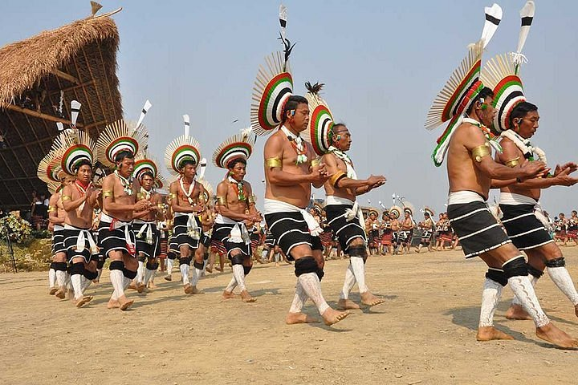
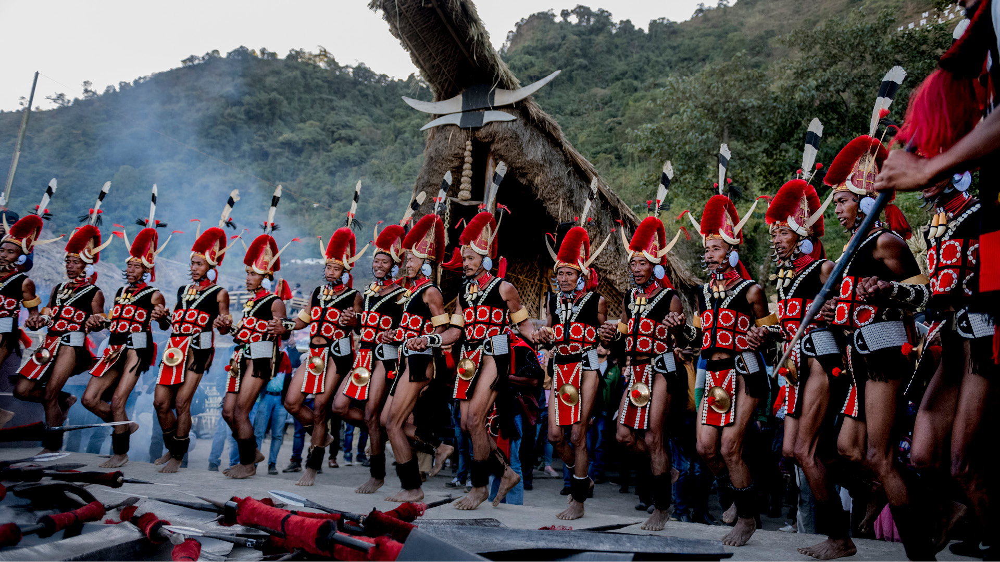
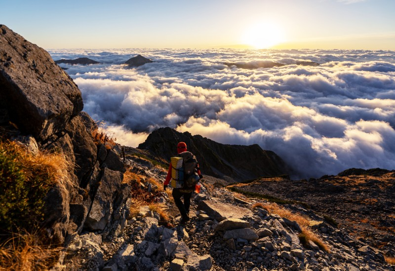
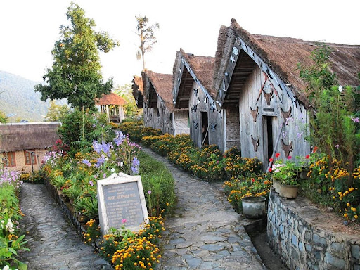
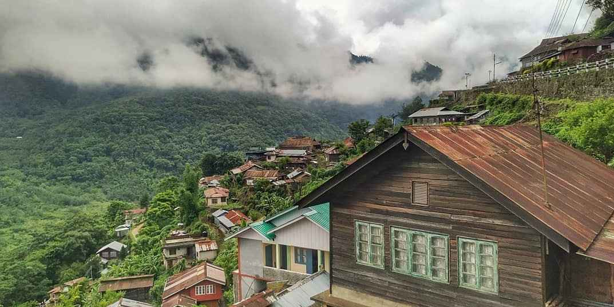

Immerse yourself in the vibrant culture of Kohima over 3 days, exploring traditional villages, historical landmarks, and bustling markets that showcase the rich heritage of Nagaland's capital city.
Duration: 3 Days
Price per Person: ₹4499
Experience the cultural diversity of Nagaland with 3 days and 2 nights of accommodation in comfortable hotels or homestays in Kohima. Enjoy authentic Naga cuisine and beverages with daily meals. Transportation for all sightseeing activities and transfers is provided. Knowledgeable local guides will accompany you, providing insights into the history, traditions, and customs of Kohima. Entrance fees to attractions mentioned in the itinerary are included for a hassle-free experience.
Day 1: Arrival in Kohima, Village Tour
Day 2: Visit Kisama Heritage Village and Kohima War Cemetery
Day 3: Explore local markets and Departure from Kohima
Witness the colorful extravaganza of the Hornbill Festival during this 7-day expedition, where you'll experience traditional dances, indigenous crafts, and authentic Naga cuisine amidst the festive ambiance of Nagaland's premier cultural event.
Duration: 7 Days
Price per Person: ₹7999
Experience the vibrant culture of Nagaland with 7 days and 6 nights of accommodation in comfortable hotels or camps during the Hornbill Festival. Indulge in delicious Naga delicacies and beverages with daily meals. Transportation for all festival activities and transfers is provided. Knowledgeable guides will accompany you throughout the festival, providing insights into the various tribal traditions and performances. Entrance fees to the festival grounds and related events are included for a memorable experience.
Day 1: Arrival in Kohima, Hornbill Festival Inauguration
Day 2-6: Enjoy Hornbill Festival activities and cultural performances
Day 7: Departure from Kohima
Embark on an exhilarating 4-day trek to Dzukou Valley, where you'll traverse lush meadows, dense forests, and cascading streams amidst the breathtaking landscapes of Nagaland's pristine wilderness.
Duration: 4 Days
Price per Person: ₹5999
Experience the thrill of outdoor adventure with 4 days and 3 nights of camping in Dzukou Valley. Enjoy hearty meals prepared by experienced camp chefs using fresh local ingredients. Transportation for trekking and transfers is provided. Experienced guides will lead the trek, ensuring safety and providing insights into the flora and fauna of Dzukou Valley. Camping gear and permits are included for a comfortable and hassle-free trekking experience.
Day 1: Arrival in Kohima, Trek to Dzukou Valley Base Camp
Day 2-3: Trek through Dzukou Valley, Explore the valley
Day 4: Trek back to Kohima and Departure
Experience the tranquility of rural Nagaland with a 2-day retreat in Touphema Village, where you'll stay in traditional Naga huts, participate in cultural activities, and savor authentic Naga cuisine amidst the picturesque landscapes of the region.
Duration: 2 Days
Price per Person: ₹2999
Escape into the serene countryside with 2 days and 1 night of accommodation in cozy Naga huts in Touphema Village. Enjoy traditional Naga meals prepared with locally sourced ingredients. Transportation for transfers to Touphema Village is provided. Cultural activities such as traditional dance performances and handicraft demonstrations are included for an immersive experience.
Day 1: Arrival in Touphema Village, Cultural Activities
Day 2: Explore the village, Departure from Touphema
Embark on a 5-day eco-tour to Khonoma, Nagaland's first green village, where you'll learn about sustainable practices, participate in community activities, and explore the biodiversity of the region's forests and fields.
Duration: 5 Days
Price per Person: ₹4999
Experience sustainable living with 5 days and 4 nights of accommodation in eco-friendly guesthouses in Khonoma. Enjoy organic meals made from locally grown produce. Transportation for all activities and transfers is provided. Engage in community-based tourism initiatives, including agricultural activities and cultural exchanges. Guided tours of Khonoma's biodiversity hotspots are included, highlighting the village's conservation efforts.
Day 1: Arrival in Khonoma, Introduction to village life
Day 2-4: Participate in community activities, Trekking, Birdwatching
Day 5: Departure from Khonoma